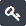

온라인 도움말을 표시합니다.
Template 목록 및 Print Layout 목록 |
cotodesign에 등록되어 있는 "Template" 및 "Print Layout" 목록입니다.
화면 우측 상단의 버튼

cotodesign Template과 cotodesign Order Viewer 시작 시에 입력하는 패스워드를 변경합니다.
보안성을 높이기 위해서는 정기적으로 변경하십시오.

온라인 도움말을 표시합니다.
언어

표시 언어를 변경합니다.
Template 목록

새로운 Template을 만듭니다.
·관련 항목 >> Template의 인쇄 방법 및 사이즈 정하기

Template을 수정합니다.

SVG 파일을 불러와 새로운 Template을 추가합니다.
SVG 파일의 사양에 대해서는 『cotodesign Setup 가이드』를 참조하십시오.

Template 미리보기를 표시합니다.
설정은 변경할 수 없습니다.

Template을 삭제합니다.

Template 파일을 불러와 서버에 업로드합니다.

선택한 Template을 저장합니다.

Template 이름의 일부를 입력하면 Template 목록에 표시하는 Template 파일을 추려 냅니다.
이름
등록되어 있는 Template의 파일명을 표시합니다.
Template의 파일명에는 명명 규칙이 있는데 마침표로 구분하여 계층 구조를 나타냅니다.
인쇄 종류
프린터로 인쇄할 경우에는 "컬러 인쇄", 레이저 포일 데코레이터의 경우에는 "포일 인쇄", 금속 프린터의 경우에는 "타각", 절단기의 경우에는 "커팅"을 선택합니다.
"▼"을 클릭하고 "인쇄 종류"를 선택하면 Template 목록에 표시하는 Template 파일을 추려 냅니다.
특수 효과
"별색"을 사용하여 Template 파일을 작성한 경우에 특수 효과에 따라 아이콘이 표시됩니다.
Print Layout 목록

새로운 Print Layout을 만듭니다.

Print Layout 설정을 변경합니다.

SVG 파일을 불러와 새로운 Print Layout을 추가합니다.
SVG 파일의 사양에 대해서는 『cotodesign Setup 가이드』를 참조하십시오.

Print Layout의 미리보기를 표시합니다.
설정은 변경할 수 없습니다.

Print Layout을 삭제합니다.

Print Layout 파일을 불러와 서버에 업로드합니다.

선택한 Print Layout을 저장합니다.
배정
Template을 배치할 Print Layout을 선택합니다.
Template에는 Template이 배정될 Print Layout이 적어도 하나는 필요합니다. 배정될 인쇄레이아웃이 없는 Template은 인쇄할 수 없습니다.
하나의 Template에 대해 배정될 Print Layout을 둘 이상 선택할 수 있지만, 컬러 인쇄 전용 Template은 컬러 인쇄의 Print Layout에만 관련지을 수 있도록 Template과 Print Layout은 동일한 인쇄 종류 끼리만 조합할 수 있습니다. 주문된 Template을 어느 Print Layout 배치할지는 cotodesign Print Manager에서 설정합니다.
디폴트
cotodesign Print Manager의 ［표준의 Print Layout에 자동배치］가 ON일 때 자동배치될 Print Layout을 선택합니다.
이름
Print Layout의 파일명을 표시합니다.
인쇄 종류
프린터로 인쇄할 경우에는 "컬러 인쇄", 레이저 포일 데코레이터의 경우에는 "포일 인쇄", 금속 프린터의 경우에는 "타각", 절단기의 경우에는 "커팅"을 선택합니다.
"▼"을 클릭하고 "인쇄 종류"를 선택하면 Print Layout 목록에 표시하는 파일을 추려 냅니다.
저장
Template과 Print Layout의 배정 설정을 서버에 저장합니다.
Copyright (C) 2018-2019 Roland DG Corporation